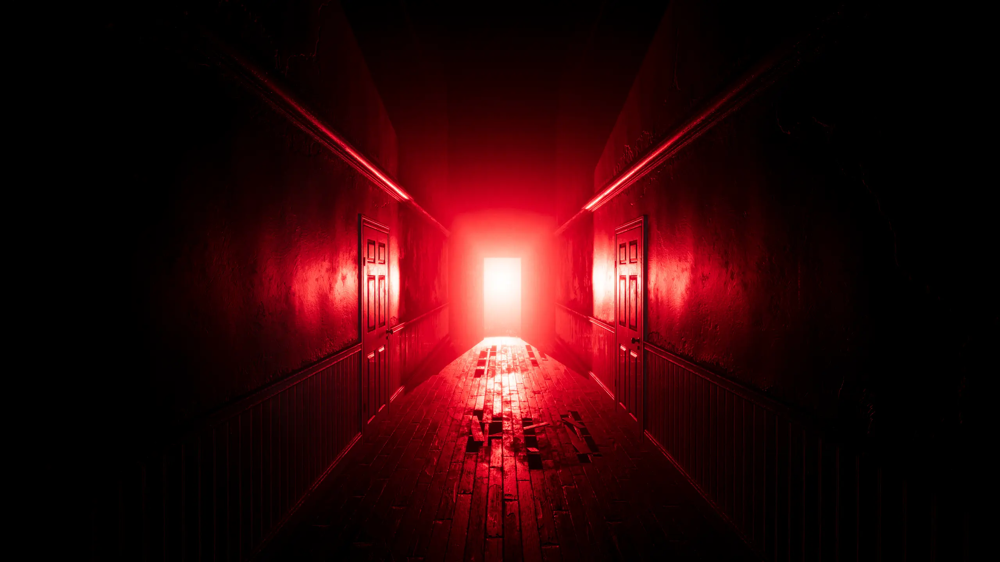
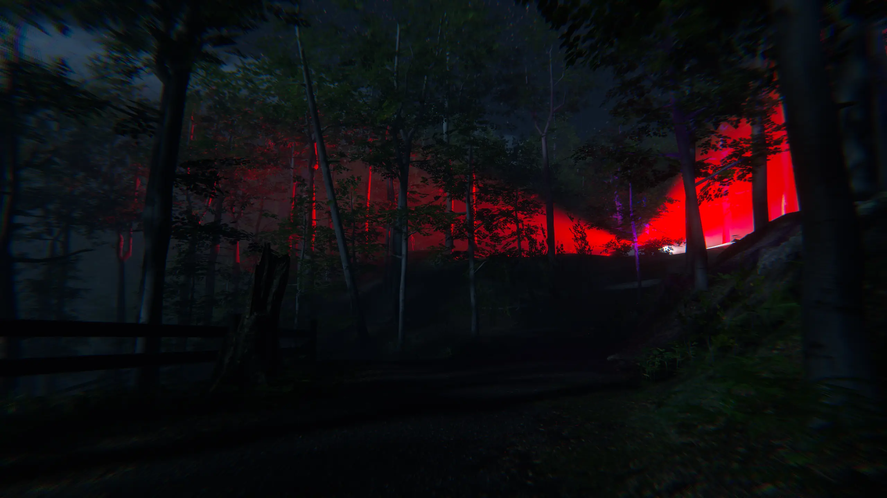
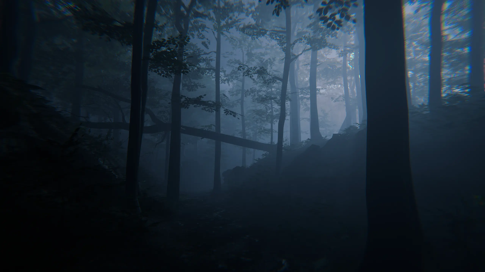
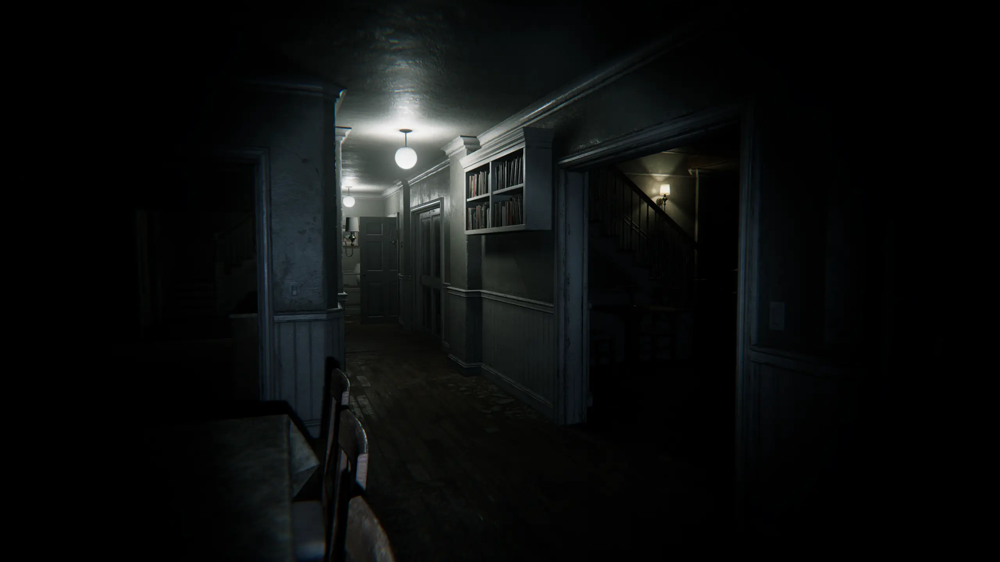

One hallway, one red light at the end of it, and an unreasonable number of hours spent getting the glow right. This update is almost entirely lighting and reflection work.
12.05.2026

After a few updates on the exterior, it was time to build the inside of the house — hallways, doorways, and one basement door that took more passes than I'd like to admit.
02.05.2026

Not everything in this game plays out during the day, or from the same point of view. This update covers a nighttime forest sequence — and getting "lit only by moonlight and patrol lights" to actually feel unsettling.
16.04.2026

Every investigation starts somewhere — for this one, it's a strip of police tape across a forest path. This update covers getting that first crime-scene moment to actually feel like one.
05.04.2026

This update was almost entirely environment work on the very first thing a player sees: the road leading up to the crime scene. Turns out "quiet forest at dawn" is a deceptively narrow target to hit.
14.03.2026

Devlog #1: an introduction to the project, and to the FBI agent who's about to have a very bad day. No trailer yet, no gameplay footage — just the shape of what's coming, and a promise not to spoil any of it along the way.
21.02.2026
